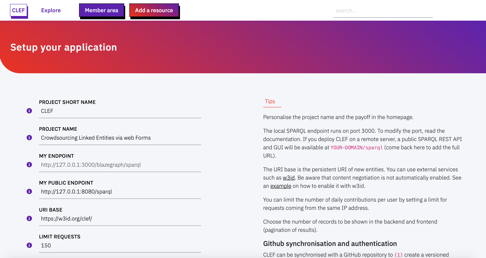
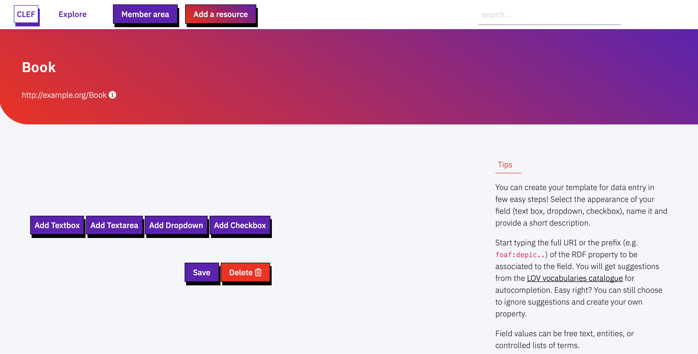
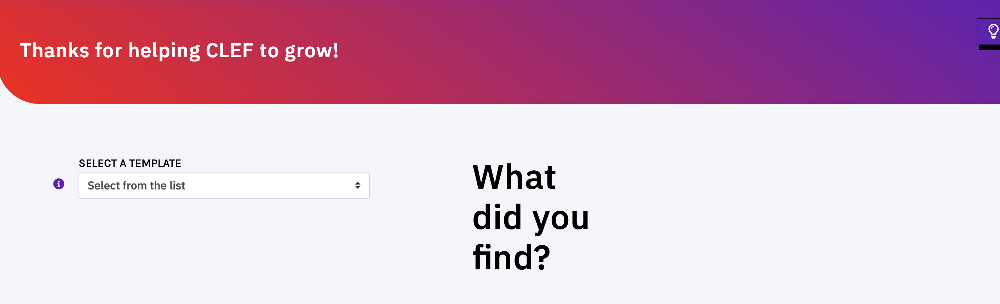
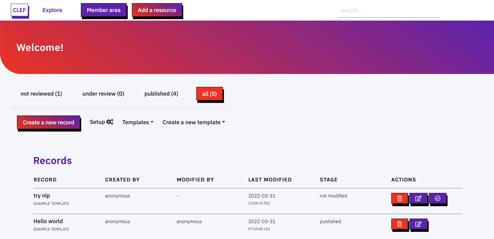
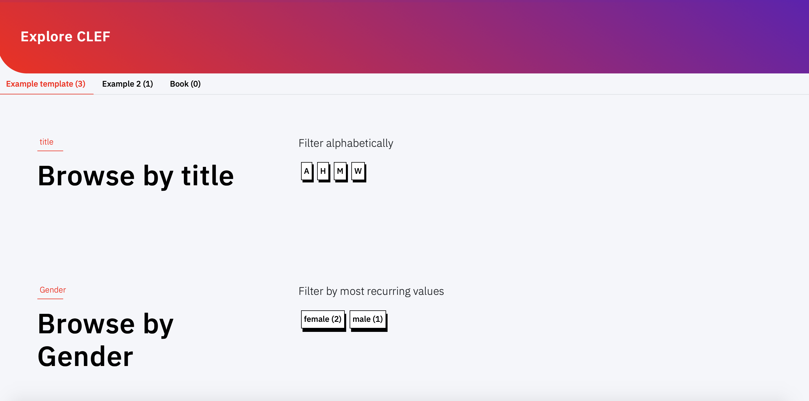

CLEF. Crowdsourcing Linked Entities via web Form
Introduction
CLEF is a lightweight Linked Open Data (LOD) native cataloguing system tailored to small-medium collaborative projects. It offers a web-ready solution for setting up data collection or crowdsourcing campaigns.
CLEF is designed to facilitate admin tasks, and to allow collaborators to produce high quality linked open data via user interface, without the burden of understanding what all this fuzz around LOD is about!
Some highlights
- customisable: create your templates for data collection
- collaborative: allow everybody to contribute to your catalogue and grant permissions to smaller groups of collaborators
- peer-review: allow collaborators to review records before publication
- autocompletion: ensure collaborators reference the same contents. Autocomplete suggestions from Wikidata, geonames and your own catalogue make it easier!
- synchronization with github: use github to authenticate collaborators, to backup and version your data
- web archiving: save your web sources for future use in Internet archive
- release 5-star data store, serve, and query your data as Linked Open Data
- browse data immediately CLEF comes with an online browsable catalogue. You can create indexes with one click (no need to develop another application for showcasing your data!)
- work locally or remote use CLEF from your desktop or on a remote server
Install and run
macOS
On Mac you can install via installer, from source or with Docker
With the installer
- download
installfrom the latest release - open the terminal, change the permissions to the file
chmod 755 Downloads/install - in the terminal, run
./install.sh. The installer clones the repository in the folder/Users/{USERNAME}/Desktop/crowdsourcing, creates a virtual environment, installs dependencies, and downloads blazegraph triplestore. - in Finder, open the folder
/Users/{USERNAME}/Desktop/crowdsourcingand run the executable scriptrun.sh(double click) - open your browser at
http://0.0.0.0:8080/ - follow the instructions for customization
From source code (No virtualenv)
- download the source code from the latest release or clone the repository
- install
requirements.txtwith pip (pip3 install -r requirements.txt) - download the latest version of blazegraph
- move the file
blazegraph.jarin the root folder of the cloned repository - in the terminal, launch blazegraph
java -Dfile.encoding=UTF-8 -Dsun.jnu.encoding=UTF-8 -server -Xmx2g -Djetty.port=3000 -Dbigdata.propertyFile=blaze.properties -jar blazegraph.jar(NB.-Xmx2grequires 2GB RAM, change according to your preference) - launch the web application
python3 app.py 8080 - open your browser at
http://0.0.0.0:8080/ - follow the instructions for customization
With Docker
- install Docker on your system
- Windows update to the newest version of Windows to ensure that Docker can be installed. For example, if you have a Windows Home, ensure you have at least the version 2004
- macOS
- Linux
- clone or download the repository
- with git for easier installation and update (optional, recommended)
git clone https://github.com/polifonia-project/clef.git - or download the zip repository and unpack it.
- no extra action is needed for configuration. The configuration is loaded from
conf.py. The only difference regards the set up of the endpoints for Blazegraph and the application (in two containers). This is set indocker-compose.ymlby two properties: BLAZEGRAPH_ENDPOINT=http://db:8080/bigdata/sparqlPUBLIC_BLAZEGRAPH_ENDPOINT=http://localhost:8080/sparql- ensure that your Docker engine is running
- run
docker compose up(the first build might take couple of minutes) - access your web browser at http://localhost:8080
- follow the instructions for customization
See section Setup for detail on how to change default ports.
Windows
On Windows you can install CLEF with Vagrant
- ensure you have VirtualBox
- ensure you have Vagrant
- clone the repository
- cd into the repository and run
vagrant up. (NB. The first time this command will take longer, as the underlying virtual machine needs to be downloaded and provisioned. The second time, the provisioning is skipped and the runtime is much faster.) - access your web browser at http://localhost:8080
- follow the instructions for customization
If you change the configuration or update the git repository, reload the running vagrant vagrant reload
Setup
Default setup
You can modify the default configuration of the application from the Member area > Setup. Changes to the configuration have immediate effect (no need to restart the application).
What you can modify:
PROJECT (SHORT) NAME: Personalise the project name and the payoff, which appear in the homepage and the menu across pages.
MY ENDPOINT: The local SPARQL endpoint runs on port 3000. Changes are disabled. To modify the default port you'll have to modify the following files:
- change
myEndpointinconf.py, in the root folder of the application. - if you are running the application from source code, change also the running command
- if you are running the app in docker, change also
docker-compose.yml - if you are running the app with the bash script, change also
run.sh - if you are running the app in Vagrant, change
Vagrantfile
MY PUBLIC ENDPOINT: the public URL of your SPARQL endpoint, used for front-end functionalities, e.g. autocomplete. Default URI is http://127.0.0.1:3000/blazegraph/sparql. Similarly to the local endpoint address, to change the port of the web application, change the aforementioned files.
- If you are running the application locally, this value must be the same as MY ENDPOINT
- If run remotely, the web application provides an out-of-the-box read-only SPARQL endpoint at
{YOURDOMAIN}/sparql. Use this URL. - if you are running the app in docker, change
docker-compose.yml
URI BASE: The URI base is the persistent URI of new entities. You can use external services such as w3id. Be aware that content negotiation is not automatically enabled. See an example on how to enable it with w3id.
LIMIT REQUESTS: Limit the number of daily anonymous contributions per user - requests coming from the same IP address.
PAGINATION LIMIT: Choose the number of records to be shown in the backend and frontend (pagination of results).
GitHub backup
CLEF can be synchronised with a GitHub repository to (1) create a versioned backup of data (and keep track of changes to records) and (2) to create a team to collaborate to the catalogue.
Before modifying the Setup page, you will need:
- to create a github account (if you do not have it yet)
- to create a github repository for storing the backup version of your data. Here you must create a folder called
records. - to obtain a github bearer token, to allow CLEF to read/write on your repository on your behalf
When selecting the scopes of the permissions for the bearer token, ensure repo rights are selected.
In the setup page you can then enable Github synchronization by modifying the following fields:
- Enable Github backup:
True - COMMITS DEFAULT AUTHOR: your GitHub username
- COMMITS DEFAULT AUTHOR EMAIL: the email you used to register on Github
Remember the repository must be either yours or of an organisation where you have been accredited as a collaborator with admin privileges.
- REPOSITORY OWNER: If the repository is yours, use your username, otherwise use the organisation name
- REPOSITORY NAME: the name of the repository as recorded in the URL (after the owner name)
- GITHUB BEARER TOKEN: Copy and paste the bearer token. Be aware you may need to change this code over time - according to the expiry date you choose.
Authentication
To allow only a restricted number of collaborators to access the backend of your application, you can use Github for authentication. Every collaborator must have:
- a github account
- been invited (via GitHub) to collaborate to the repository
In addition to prior requirements for synchronization, the owner of the repositoy must also create a github OAuth application connected to the repository and the web application
- Follow the instructions for creating the OAuth app
- when asked, select as Authorization callback URL the following path
{YOURDOMAIN}/oauth-callback, e.g. http://mydomain.org/oauth-callback - At the end, copy and paste the CLIENT ID and SECRET KEY in the Setup page
GitHub authentication is strongly recommended for applications that run online.
If you do not enable it, any visitor will be able to access the backend of your application.
Once it is enabled, only accredited GitHub users that are collaborators of your repository will be allowed to access the Member area from the menu.
Notice that anonymous contributions will still be possible (from the menu Add a resource). Only accredited users will be able to review and publish the new record though.
Templates and ontologies
Templates are interfaces designed to setup the web forms for data collection. Each template corresponds to a topic of interest to be described (an entity). Templates can be created, modified, and deleted from the Member area.
Resource templates
To create a new template, click on Create a new template in the Member area.
First, you must provide a meaningful unique name (e.g. Book, Person) and the URI of a OWL class (e.g. http://xmlns.com/foaf/spec/#term_Person). Notice that name and class cannot be modified
in later stages (you can only delete and start a new template).
Once filled in name and class, you are redirected to a dedicated webpage for customizing the template. Templates are lists of fields, each corresponding to a RDF property having as a subject an instance of the class already specified.
You can create new fields choosing between: textboxes (short texts), text areas (long texts), dropdown (select 1 term from list), and checkbox (multiple terms from list).
For each new field you are asked to fill in a few details, like: display name (to be shown in the final web form for data entry), a description (that will appear next to the field), the RDF property associated to the field, values type or list (see below), and placeholder (an example value of the field).
Tip! You can type the complete URI of the RDF property or, if known, start with the prefix and property name. Autocompletion suggestions will appear (powered by LOV). To accept a suggestion, click on the short name in violet. If you ignore suggestions, type the full URI of your property.
You can modify the order of fields or delete fields using the icons that appear at the bottom of each field box.
TEXT BOX
Text boxes can be used to record 3 types of information. In the VALUE TYPE field you can choose between:
- Free text (Literal): short texts (e.g. a title). When this value is selected, a checkbox appears on the bottom of the box, asking whether to use this value as primary label. At least one free text field must be included in the template and at most one free text field must be flagged as primary label to associate a title to the record.
- Entity URI (from Wikidata or catalogue): the final field will provide autocompletion suggestions from wikidata or, if nothing is found on Wikidata, from the catalogue. Users may accept or reject the suggestions. (NB. this field is not meant to record URLs of web resources. Use Free text instead.). When this value is selected, a checkbox appears on the bottom of the box, asking whether to use this field value as a filter in the Explore page, i.e. it creates an index of catalogued resources by values of the selected field. You can create as many filters as you want.
- Location (from geonames): the final field will provide autocompletion suggestions from geonames, a specialised service for administrative and geographical locations. Like with Entity URI, when this value is selected, a checkbox appears on the bottom of the box, and this field can be used as filter in the Explore page.
Tip! Fields of type Free text (Literal) can be used to record URLs of web resources (e.g. an online video or a blog post). In the final form you will be asked if a copy of the website should be preserved in the long term. While you cannot store external documents in CLEF, CLEF sends a request to the Internet archive Wayback machine to store a copy of your favourite webpages.
TEXT AREA
A text area can include a long textual description.

In this field you can automatically extract Named Entities (powered by SpaCy). After filling in the field, press return and wait for suggestions to appear at the bottom of the text area. Suggested entities (people, places, organisations, etc.) are matched to Wikidata entities and are stored as keywords associated to the record (schema:keywords) - not as values of the field. You can accept or reject suggestions.
DROPDOWN AND CHECKBOX
Dropdown and checkboxes behave similarly. These allow the final user to choose one or more terms from a list of controlled values. Specifically, dropdowns restrict the selection to one term from the list, while checkboxes allow multiple choice selections.
In the field VALUES you must provide a comma-separated list of terms to fill in the final list in dropdown or checkbox. List of terms are URIs associated with a label. Both internal and external vocabularies can be used (and mixed). In each line, write the URI of a resource, followed by comma and the label.
Data model
In CLEF it is not possible to import ontologies and vocabularies. Instead, the data model is created from the classes and properties specified in templates. The final data model is documented in a dedicated web page called Data Model, available from the footer of every web page. For each template, class, and property, the LOV catalogue is queried to retrieve original labels associated with the URI. If the class or property is not indexed in LOV, the local label (the display name) is shown instead.
Getting started!
Overview
CLEF comes with the following webpages, accessible from the menu:
- Homepage a landing page presenting the project. Title and payoff can be changed from the Setup page. Instead, the page content can be only changed manually by modifying the HTML file
templates/login.html - Explore an automatically generated index of resources. For each template a tab is created for exploring resources of the specified class. Properties selected as filters in their respective templates are here used to create sections for exploration. For each template an alphabetical index is displayed. Other filters (i.e. those having Entity URI, locations, or controlled lists, as values) are shown sorted by distribution (i.e. most recurring values are shown first).
- Member area the backend of the application. Can be accessed via github authentication or, if not applicable, in anonymous mode. The welcome page shows the list of created records, and the actions possible on those (modify / publish / delete). From here, users can modify the Setup of the application and the form template.
- Add a resource create a new record in anonymous mode. To create a record with user credentials, access the member area via github authentication first.
From the footer:
- SPARQL endpoint a GUI for querying against your data in SPARQL. The same URL
{YOURDOMAIN}/sparqlcorresponds to the SPARQL endpoint REST API. - Data model the specifications of the ontology terms used in templates
- Editorial guidelines a list of tips for creating new records. The page is also available as right sidebar when creating a new record.
Moreover, each record has a dedicated webpage, permanently identified by its URI. Likewise, terms from internal controlled vocabularies and new entities referenced in records (e.g. new entities created in Free text fields) have a dedicated webpage. External terms do not have dedicated page. Rather, a link to the source is provided (e.g. Wikidata items)
Create a record

Users can create a new record in two modalities: anonymous or authenticated mode.
- Anonymous users can create new reocrds via the button
Add a resourcein the menu. In this way the user is not authenticated, and their personal information is not stored. The IP address of the user is tracked and a limited number of new records can be created per day. Records created in this way can be accessed from the member area by accredited users, who can modify and publish the record. - Authenticated users should first access the `Member area` from the menu to authenticate via Github. The user is redirected to Github authentication mask, where they are asked to give CLEF permissions to read/write repositories on their behalf. From the Member area, they can use the button
Create a new record. NB. Only users that are collaborators of the organisation and/or repository associated to the project can use this method (see Setup).
The first step to create a new record is to select the template for the resource to be created.
After selecting the template the user is redirected to the data entry interface. The page shows the fields specified in the associated template. On the top-right, a light bulb icon shows a shortcut to the editorial guidelines, including tips for data entry. Click on the icon to toggle the helper.
Each field includes three elements: label, description (i icon), and input area. A tooltip shows a description of the expected value when hovering with the mouse. Likewise, a placeholder in the input area can show an example value. The input area can be a free-text field, a dropdown, or a checkbox.
TEXT FIELD
If the label is followed by *, the field is mandatory and it is used to associate a title to the record. While typing, a lookup service searches the catalogue to show whether records with a similar title already exist and prevents from data duplication. However, the lookup does not enforce any behaviour (duplicates could be created).
If followed by the Wikidata icon (a bar code), an autocomplete service is called while typing. The user is encouraged to reuse terms from Wikidata. If no matches with the input text are found in Wikidata, terms from the catalogue are also suggested, to encourage reuse and consistency of data.

To accept a suggestion, click on the link in the result (e.g. Federico Fellini). The selected value appears under the input area (highlighted in violet). Users can reject all suggestions and create a new value: press enter and the new value will appear under the input area (highlighted in orange). Multiple values are allowed in this type of field.
Text areas allow longer descriptions to be included and can be expanded vertically.
Once users finish typing, they can press return and wait for named entities to be extracted from the text (e.g. people, places, organizations). Such entities are reconciled to Wikidata and are stored as keywords associated to the record (not to the specific field). Suggestions can be rejected by clicking on the x
Manage records
Records are accessible via the member area to authenticated users. Records are paginated and sorted by date (from the most recent to the oldest).
The list of records can be filtered by publication status:
not reviewedcorrespond to records created and never opened/modified. In the table of records, these records are flagged with STAGE: not modifiedunder reviewcorrespond to records created and modified at least once. In the table of records, these records are flagged with STAGE: modifiedpublishedcorrespond to records created, modified at least once and published, i.e. visible from the web page Explore and flagged with STAGE: published.
In the column ACTIONS, the button modify allows a reviewer to modify a record. When clicking, the template is shown filled in with data, and values can be modified. After saving changes, the reviewer's name (if Gitub authentication is enabled) appears in the backend in the column modified by, and the status of the record changes to modified. Once it is reviewed at least once, the record appears in the Explore page.
NB. Before being reviewed, records do not appear in the Explore page. Records must be reviewed at least once before being published. Once a record has been published it cannot be temporarily removed from the Explore page (e.g. modifying a published record). Rather, the record keeps appearing in the Explore page, and the title is flagged with the label draft.
The button review allows a reviewer to modify a record and, if the review process is deemed over, to publish it straightaway. When modifying the record, the reviewer may decide to save the changes without publishing the record. After publication, the status changes to published and the label draft is removed from the title of published records.
To remove the record from the Explore page, it must be deleted. The button delete in the column ACTIONS allows a reviewer to delete a record permanently. If Github synchronisation is enabled, the action affects also the file stored in the repository.
Visualize records
New records are available at {YOURDOMAIN}/view-{RESOURCEID}>. The web page shows fields in the same order as in the template.
When clicking on values, the website can redirect users to Wikidata pages (e.g. Department of classical philology), geonames pages (e.g. Bologna) or to internal pages describing terms belonging to controlled vocabularies (e.g. female).
Explore and search
Records can be browsed in the page Explore. Records are grouped by template in tabs, also showing the number of records falling uder that cetegory. In each tab, sections are shown for each field specified as a filter in the template.
By default, an initial filter is created for the text field defined as primary label, and records are sorted alphabetically. Filters based on entities (i.e. text fields referencing entity URIs and locations, or dropdwon and checkboxes referencing controlled vocabularies) are grouped by frequency of values, and then sorted alphabetically.
The top-right search bar in the menu looks into the catalogue for resources titles. The search is performed on the primary label of records. Suggestions are shown while typing.
Data access
THE DATASET
New resources (records) are associated with the class and the URI base specified in the template. Instead, URIs from Wikidata and geonames are directly reused and no information on their classes or properties are stored.
For every new resource a named graph is generated, which includes triples all having the same subject the {resourceURI} identifying the resource. The named graph appears in the form {resourceURI}/ (the same URI of the resource, followed by a slash).
Basic provenance information is associated with named graphs. Whenever applicable the PROV ontology is reused, namely:
RDFS.labelthe label corresponds to the field set as primary label in templatePROV.wasAttributedTothe creator of the resource. Can be anonymous if the user did not log in, or a URI including a normalised string of the github user email{BASE}/{GITHUB_EMAIL}PROV.wasInfluencedBythe modifier of the resource.PROV.generatedAtTimethe datetime of the creation/change of the record. Versioning details are not stored in the graph. To get details on the modified files (e.g. which fields were modified and by whom), users must review github commits.DBPedia.currentStatusthe stage of the record in the editorial process. Values (literals) include:not modifieda record created that has not been reviewedmodifieda record reviewed that has been reviewedpublisheda record reviewed and published.
DATA MODEL
A reference page dedicated to the data model is automatically generated by the system to support developers in data reuse. The webpage is available at {YOURDOMAIN}>/model (link in the footer).
The documentation is automatically generated by querying CLEF, to retrieve class and properties effectively used, and Linked Open Vocabularies (LOV), to retrieve labels and comments associated to the original specification in the ontology. If a property is not available from the LOV catalogue, a default label is shown.
USER INTERFACE
New records are available at {YOURDOMAIN}/view-{RESOURCEID}. The webpage also serves data as RDFa (according to schema.org). NB. Dereferentiation is not a built-in feature. Users must refer and configure external persistent URI providers (e.g. w3id).
SPARQL endpoint
CLEF comes with a built-in SPARQL endpoint. A GUI for querying the SPARQL endpoint (read only) and a REST API for programmatic querying the triplestore is available at {YOURDOMAIN}/sparql.
DATA DUMP
When Github backup is enabled, a backup of records is there provided in Turtle (a file for each record). By default, files are included in a folder called records. Versioning is provided by github. Every time a change happens to a record in the application, an update is sent to Github.
Be aware that the synchronization between the triplestore and the repository is one-way, that is, changes happening on github only are not sent to the triplestore.
Deployment
CLEF is based on webpy. To deploy CLEF in production server, you'll need a professional web server process, such as gunicorn, which will serve the app. See how to deploy web.py applications.
DEPLOY WITH DOCKER
The docker-compose.prod.yml is set up for the server deployment using three docker containers, with nginx handling the static files as described above.
docker-compose -f "docker-compose.prod.yml" up -d --build'- The app listens on port 80, so if you run this locally, access your browser at
http://localhost
Credits
CLEF is part of Polifonia, a H2020 funded project (101004746). The repository is maintained bymarilena.daquino2@unibo.it